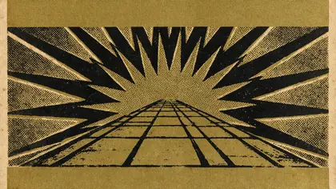
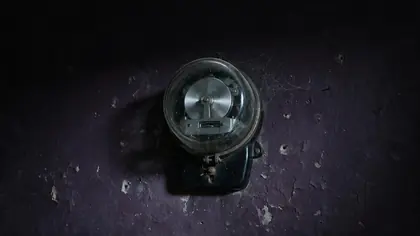
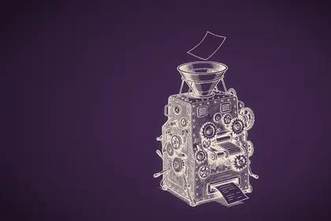
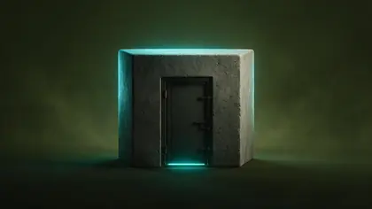
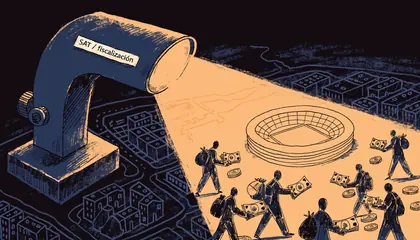
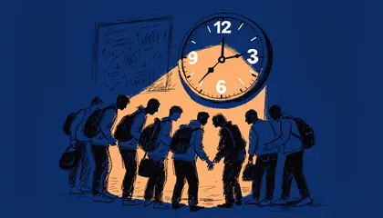
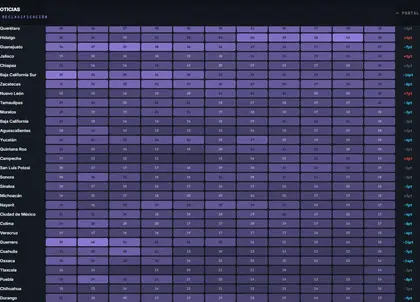
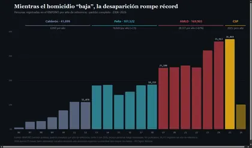

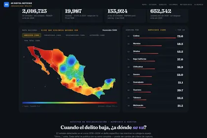

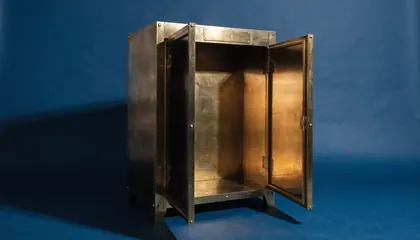

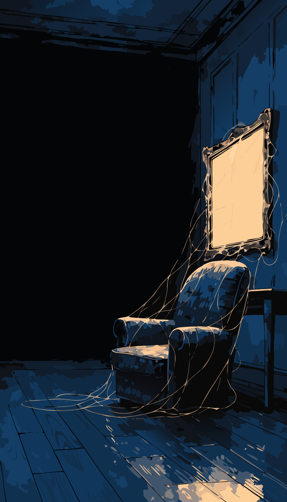


Ninguna columna coincide con esa búsqueda.
Las 104 columnas publicadas, cada una por su portada. Filtra por tema o busca por palabra: títulos, entradas y palabras clave entran en la búsqueda.











Ninguna columna coincide con esa búsqueda.
Los expedientes con datos interactivos viven en su propia sección.
Usamos cookies de Google Analytics para medir la audiencia y mejorar el sitio. Puedes aceptarlas o rechazarlas. Más detalles en nuestro Aviso de privacidad.